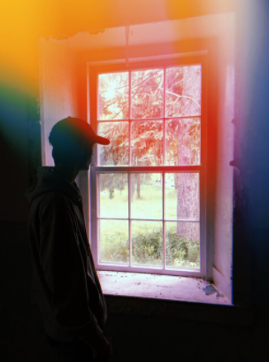

Hi there! My name is Mason and I am a second year student within the User Experience Design program at Wildrid Laurier University, located in Brantford, ON. For as long as I can remember, I have had a passion for design and creation, from photography, prototyping, social media work and much more. I love to innovate and produce products that are both visually appealing and user focused. I am a persistant and hard worker that has the experience and skills to be useful within a business in need of a UX Designer.
